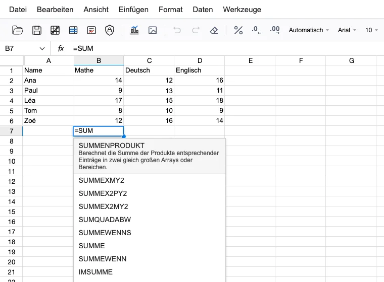
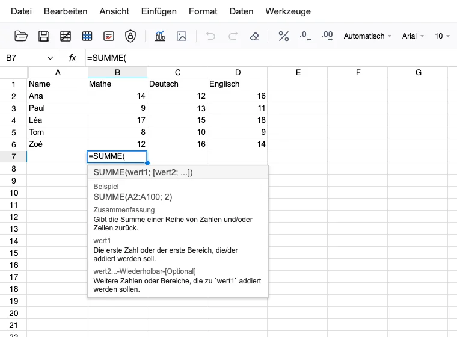
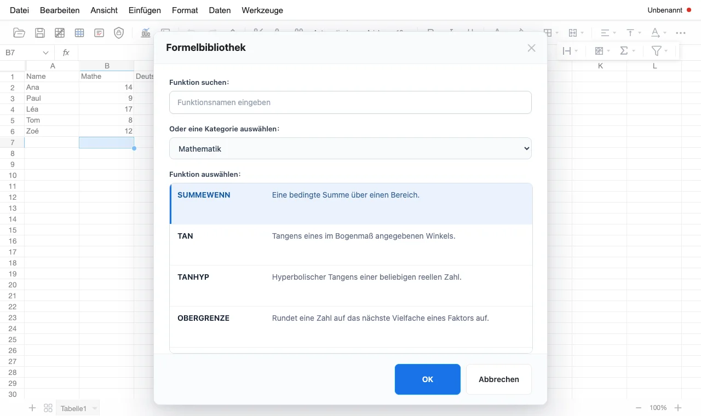

Formeln
Eine Formel schreiben
Eine Formel beginnt mit =. Sie enthält Zahlen, Texte in Anführungszeichen, Zellbezüge, Operatoren und Funktionen.
=B2*2
=(B2+C2+D2)/3
=MITTELWERT(B2:B6)
="Summe: "&SUMME(B2:B6)Die Zelle zeigt das Ergebnis, die Bearbeitungsleiste die Formel. Zellen, die von einer geänderten Zelle abhängen, werden sofort neu berechnet.
Im Deutschen ist das Komma das Dezimaltrennzeichen, das Semikolon trennt die Argumente: =RUNDEN(3,14159; 2). Funktionsnamen werden klein oder groß, deutsch oder englisch getippt: =summe(B2:B6) und =SUM(B2:B6) werden angenommen.
Zellen mit der Maus angeben
Beim Schreiben einer Formel fügt ein Klick auf eine Zelle des Blatts ihre Adresse ein, ein Ziehen den Bereich. Jeder Bezug hat seine Farbe, in der Formel wie auf dem Blatt.
Die Vervollständigung
Ab den ersten Buchstaben eines Namens schlägt DocCells die Funktionen vor, die sie enthalten: ↑ ↓ zum Durchlaufen, Eingabe, Tab oder ein Klick zum Wählen. Nach der öffnenden Klammer erinnert eine Hilfe an die Argumente.


Die automatische Summe
schreibt eine Summe. Ihr Pfeil bietet SUMME, MITTELWERT, ANZAHL, MAX, MIN und Alle Formeln an: die Bibliothek, in der man eine Funktion nach Name, Beschreibung oder Kategorie sucht.

Operatoren
| Operator | Aufgabe |
|---|---|
+ - * / | vier Grundrechenarten |
^ | Potenz: =2^10 |
% | Prozent: =20%*B2 |
& | verkettet Texte: =A2&" "&B2 |
= <> | gleich, ungleich |
< > <= >= | Vergleiche |
( ) | Vorrang |
Potenzen kommen vor Produkten und Quotienten, dann Summen, dann Vergleiche. =-2^2 ergibt −4 (4 in Excel).
Bezüge
| Schreibweise | Bedeutung |
|---|---|
B2 | eine Zelle; folgt dem Ausfüllen |
$B$2 | dieselbe Zelle, auch beim Ausfüllen |
B$2, $B2 | feste Zeile, feste Spalte |
B2:D6 | ein Bereich |
B:B, 2:2 | eine ganze Spalte, eine ganze Zeile |
Tabelle2!B2, 'Noten 2'!B2 | eine Zelle eines anderen Blatts |
noten | ein benannter Bereich |
Nach unten ausgefüllt wird =B2*$B$1 zu =B3*$B$1, =B4*$B$1…
Bedingungen
=WENN(B2>=10; "bestanden"; "nicht bestanden")
=WENN(UND(B2>=10; C2>=10); "ja"; "nein")
=SCHALTER(A2; "a"; 1; "b"; 2; 0)
=ZÄHLENWENN(B2:B6; ">10")
=SUMMEWENN(A2:A6; "Ana"; B2:B6)
=MITTELWERTWENN(B2:B6; "<10")- Wahrheitswerte werden
WAHR()undFALSCH()geschrieben, mit Klammern. Sie werden als TRUE und FALSE angezeigt. - Ein Kriterium ist ein Text:
">10","<>0","Ana". Die Platzhalter*und?werden nicht erkannt. - Eine leere Zelle erkennt man mit
=B2=""; sie ist nicht gleich 0.
In einer Tabelle suchen
=SVERWEIS("Léa"; A2:D6; 3; 0)
=INDEX(A2:A6; VERGLEICH(MAX(B2:B6); B2:B6; 0))Die erste sucht Léa in der ersten Spalte der Tabelle und gibt die dritte zurück; das letzte Argument 0 verlangt den genauen Wert. Die zweite gibt den Namen der Person mit der besten Note.
Datum und Uhrzeit
Ein Datum ist eine Anzahl von Tagen, eine Uhrzeit ein Bruchteil eines Tages: in Zellen lassen sie sich addieren und subtrahieren.
=A2+7
=A3-A2
=TAGE(A3; A2)
=WOCHENTAG(A2; 2)Ein von DATUM oder HEUTE geliefertes Datum muss über eine Zelle gehen, um damit zu addieren: =HEUTE()+1 ergibt #VALUE!, aber wenn A1 =HEUTE() enthält, ergibt =A1+1 morgen. Das Ergebnis ist eine Zahl: ihr ein Format Datum geben.
Fehler
| Anzeige | Ursache |
|---|---|
#NAME? | unbekannter Name: Tippfehler, nicht berechnete Funktion, WAHR ohne Klammern, Text ohne Anführungszeichen |
#VALUE! | unerwarteter Typ: ein Text, wo eine Zahl nötig ist |
DIV/0 | Division durch null oder durch eine leere Zelle |
#N/A | Wert nicht gefunden (VERGLEICH, SVERWEIS) oder GEO außerhalb von DocGeo |
#REF! | nicht vorhandene Zelle oder nicht vorhandenes Blatt |
#NUM! | Zahl außerhalb des Definitionsbereichs: =WURZEL(-1) |
#ERROR! | falsch geschriebene Formel oder nicht berechnete Funktion |
WENNFEHLER ersetzt den Fehler einer Funktion (#N/A, #NUM!): =WENNFEHLER(SVERWEIS(E1; A2:D6; 2; 0); "fehlt"). Den einer Rechnung (DIV/0, #VALUE!) ersetzt es nicht: gegen eine Division durch null den Divisor prüfen, =WENN(B2; B3/B2; ""), was für eine Null wie für eine leere Zelle gilt.